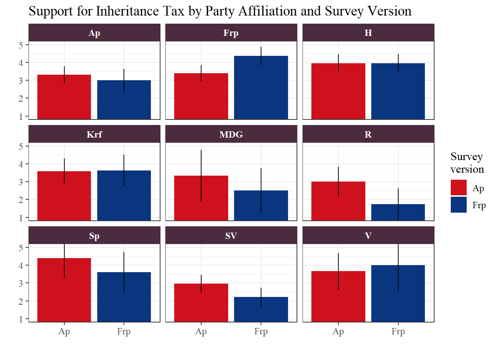
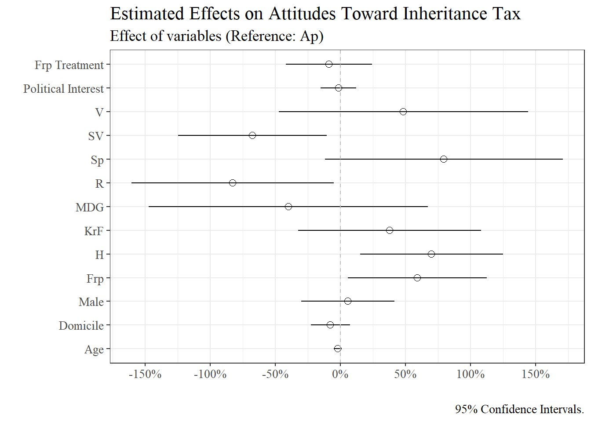
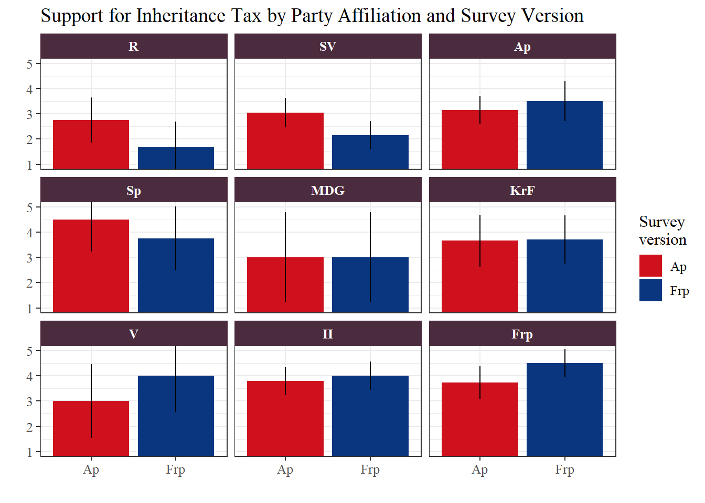
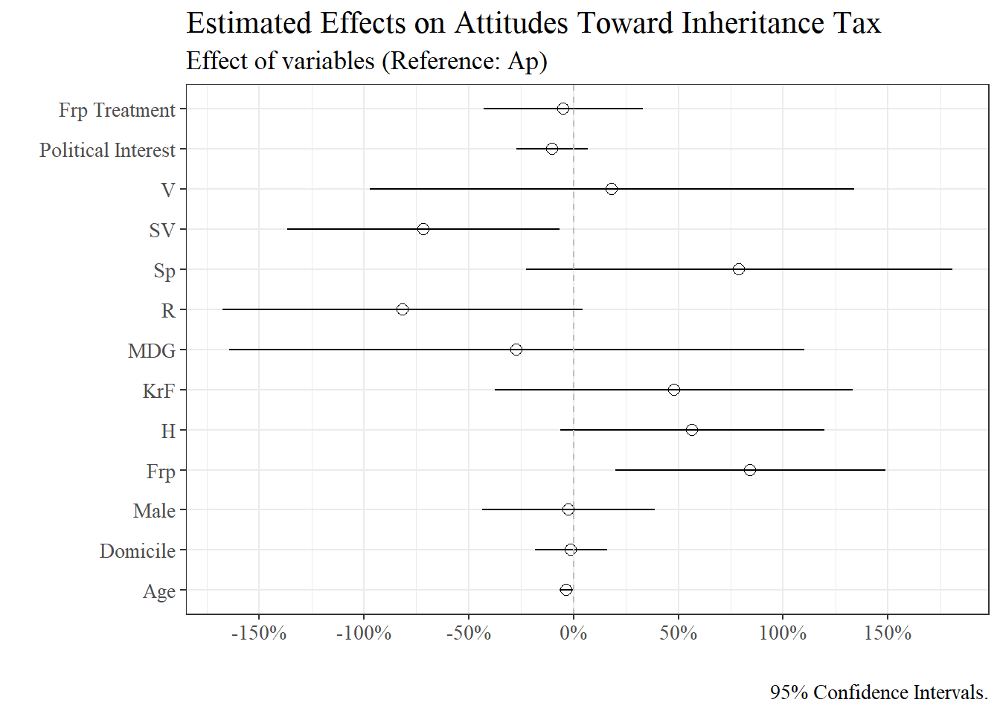

Analysis and Results
Do opinions change?
Background and Hypotheses
While our initial findings showed a small and non-significant difference between the two survey versions, those results only reflected the overall effect of the party cue across the entire sample. This broad view does not account for the respondents’ political leanings. We must also ask: are there differences in how the party cue affects individuals depending on which political party they feel closest to?
By analyzing the support for inheritance tax across party affiliations, we examine whether respondents align their views with their preferred party’s position. In theory, voters are expected to be more supportive when “their” party proposes a policy, or more skeptical when it comes from an opponent. Figure 1 illustrates the level of agreement with the statement that there should not be an inheritance tax, depending on whether the proposal was attributed to the Labour Party (Ap) or the Progress Party (Frp).
Analysis of Party Cues
A general pattern emerges: respondents tend to report higher levels of agreement when the proposal is associated with a party they are ideologically closer to. Among respondents affiliated with Frp, support for the proposal is higher when it is attributed to Frp than when it is attributed to Ap. A similar tendency can be observed among Ap supporters, although the difference is smaller. These observations align with our first two hypotheses:
H1: Voters who identify the Labour Party as the party they feel most closely affiliated with will be more favourable toward the proposal when the Labour Party is named as its advocate.
H2: Voters who identify the Progress Party as the party they feel most closely affiliated with will be more favourable toward the proposal when the Progress Party is named as its advocate.
While most groups react as expected, respondents affiliated with Høyre (H) and Kristelig Folkeparti (KrF) appear largely unaffected by the treatment, showing nearly identical support across both versions. For the remaining parties, there is a tendency toward higher support when the proposal is associated with their aligned political bloc. For instance, people feeling the closest to Sosialistisk Venstreparti (SV) and Rødt (R) express lower agreement when the proposal comes from Frp than from Ap.
We also see an ideological divide: agreement is consistently lower among those who feel closest to SV and R, and notably higher among Frp and H supporters. This provides partial support for our hypotheses regarding the left-right ideological scale:
H3: Voters who place themselves on the right side of the left-right political scale express lower agreement toward the proposal when the Labour Party is named as its advocate.
H4: Voters who place themselves on the left side of the left-right political scale express lower agreement toward the proposal when the Progress Party is named as its advocate.
However, it is important to note the vertical lines in Figure 1, which represent the 95% confidence intervals. These lines show the uncertainty in the data. Since the ‘true’ level of support in the wider population could be anywhere between these lines, we cannot say with certainty exactly how large the effect is - or if the observed differences are due to the party cue or just random chance.
Factors Influencing Support
Figure 2 presents the estimated effects of various factors on support for the proposal. In this model, women and respondents identifying with the Labour Party (Ap) serve as the reference categories, meaning all other results are shown in comparison to these groups. Positive values indicate a positive effect on agreement with the statement (i.e., these groups are more likely to agree that there should not be an inheritance tax), while negative values indicate a negative effect on the level of agreement.
The horizontal lines represent 95% confidence intervals. When a line crosses the dashed zero-line, the data does not provide enough evidence to conclude whether the factor has an effect or if the result is simply due to random noise. Several of the intervals are relatively wide, indicating substantial uncertainty in these estimates.
Overall, very few of the variables in our model show a clear, statistically certain impact on support for the proposal. Notably, the party cue itself (whether the proposal was attributed to Ap or Frp) appears to have a minimal and uncertain effect. Instead, existing party affiliation stands out as the most consistent driver of attitudes. This suggests that respondents’ underlying political values are more important than which party is presented as the sender of the proposal.
Among the party groups, feeling closest to SV and R has a negative effect, meaning these respondents show lower levels of support for the statement than Ap supporters. In contrast, identifying with H and Frp has a positive effect. This aligns with the traditional left-right axis, where parties to the left of Ap are naturally the most positive towards inheritance tax — hence disagreeing most with the idea that there should not be any tax on inheritance.

The Impact of Party Identification
To examine how the party cue interacts with respondents’ political alignment, we calculated the conditional average marginal effects by treatment. When the statement is attributed to Ap, differences between party groups are generally small and statistically uncertain, indicating that Ap as the messenger does not strongly shift opinions.
By contrast, when the statement is attributed to Frp, clearer patterns emerge. Frp and H supporters show notably higher agreement compared to Ap supporters, with effects reaching statistical significance (p < 0.01 for Frp, p < 0.05 for H). Meanwhile, R supporters express lower agreement, and SV supporters show a marginally negative effect (p < 0.05 for R, p ≈ 0.07 for SV). This indicates that responses to the Frp cue vary across the political spectrum, with right-leaning respondents (H and Frp) tending to support the proposal more, and left-leaning respondents (R and SV) tending to support it less.
Overall, these results highlight an asymmetry in how party cues influence opinions: Frp cues clearly affect attitudes in line with partisan expectations, whereas Ap cues have a more muted impact across the political spectrum.
Robustness Check
Figure 3 presents a robustness check where respondents who failed to correctly recall which party was associated with the proposal were excluded. The goal is to determine if the results remain consistent when excluding individuals who did not pay attention to the party cue, or who may have simply clicked through the survey at random.
The overall pattern remains largely consistent with Figure 1, though some minor shifts occur when excluding respondents who failed the manipulation check. For those feeling closest to MDG, the difference between the survey versions practically disappears. For respondents feeling closest to Ap, the direction of the effect actually reverses - showing slightly more support when the statement is attributed to Frp - though this difference is still minimal. Ultimately, the wide confidence intervals across categories indicate that the ‘true’ effects remain uncertain. This suggests that while the main patterns persist, the impact of the party cue is weak, and the results should be interpreted with caution.

Figure 4 shows that the overall effects of the variables remain relatively stable when the sample is limited to “attentive” respondents. Party affiliation continues to be a stronger predictor of attitudes than the framing treatment, which remains small and uncertain. The most notable change is that the estimates for H and R now cross the zero-line, while SV and Frp still show clear effects compared to Ap. While the uncertainty in these estimates may have increased due to the reduced sample size (from 315 to 231), we cannot determine with certainty if this is the case.

Excluding respondents who failed the manipulation check when calculating the conditional average marginal effects produces broadly similar patterns, though some effects become more pronounced. When the statement is attributed to Ap, differences between party groups remain small and statistically uncertain. In contrast, the Frp cue shows clearer partisan effects: Frp supporters still show increased agreement (p < 0.05), while R and SV supporters exhibit stronger negative responses (p < 0.01), indicating reduced agreement. However, the effect on H voters is no longer statistically significant.
Conclusion
Taken together, the results provide partial support for the hypotheses. Our analysis of conditional average marginal effects reveals an asymmetrical pattern: while the proposal’s attribution to Ap had a muted and non-significant impact across the spectrum, the attribution to Frp acted as a stronger signal. For respondents identifying with Frp and H, the Frp cue significantly increased support, while it had the opposite effect for those on the far left. This aligns to some extent with our hypotheses, suggesting that party cues do influence opinions, but their effectiveness depends heavily on the messenger’s identity and the voter’s own alignment.
However, these patterns are not consistently strong across all groups, and the high degree of uncertainty - visible in the wide confidence intervals - makes it difficult to determine the exact size of these effects in the broader population. In summary, while party cues can sway attitudes, especially when coming from a polarizing messenger like Frp, a person’s underlying political values remain the most decisive factor in determining their view on inheritance tax.